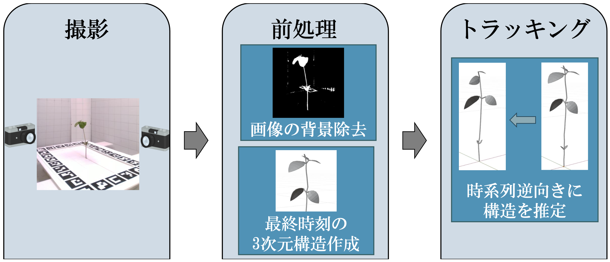

微分可能レンダリングを用いた実植物の構造トラッキング

Type: Conference Paper
Publication: 第26回画像の認識・理解シンポジウム (MIRU 2023) 口頭発表 (ショートオーラル)
DOI: N/A
Abstract:
本研究は，大規模な撮影機器を要さない，少数視点からのタイムラプス画像群を入力とした，植物の3次元構造トラッキング手法を提案する． 提案手法は，タイムラプス画像群から得られる枝葉のマスク画像および，最終時刻における3次元構造を用いて，微分可能レンダリングにより構造を最適化する． 隣接フレーム間で葉の枚数や枝構造が大きく変化しないデータセットを用いて評価実験を行い，本手法の有効性を確認した．